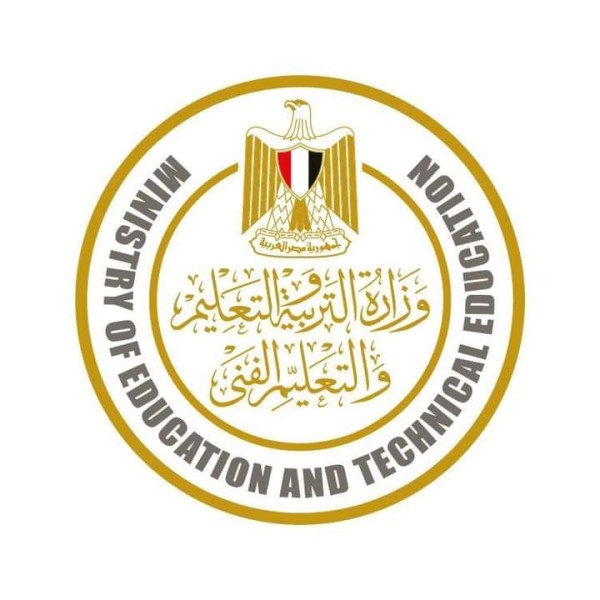

التعليم تنفى تغيير مواعيد امتحانات نهاية الترم الثانى.. وتؤكد: تبدأ 6 مايو
نفى شادي زلطة المتحدث الرسمي باسم وزارة التربية والتعليم والتعليم الفني، صحة ما تردد على مواقع التواصل الاجتماعي حول تغيير مواعيد امتحانات صفوف النقل والشهادة الاعدادية، مؤكدا أن مواعيد الامتحانات كما هي يوم 6 مايو القادم، وفقا لجداول الامتحانات التي أعلنتها الوزارة.
وأكد المتحدث الرسمي أن الدكتور رضا حجازي وزير التربية والتعليم والتعليم الفني يحرص دائما على اطلاع الطلاب وأولياء الأمور على كافة التفاصيل المتعلقة بالمنظومة التعليمية والامتحانات بشكل استباقي، في إطار تحقيق مبدأ الشفافية مع الرأي العام.
ويهيب شادي زلطة بالطلاب وأولياء الأمور عدم الانسياق خلف المنشورات التي يتم تداولها على مواقع التواصل الاجتماعي، والتي تستهدف إثارة الارتباك، مشيرا إلى أن أي مستجدات تعلن عنها الوزارة عبر قنواتها الرسمية سواء عبر البيانات الرسمية أو الصفحة الرسمية للوزارة أو موقعها الإلكتروني.